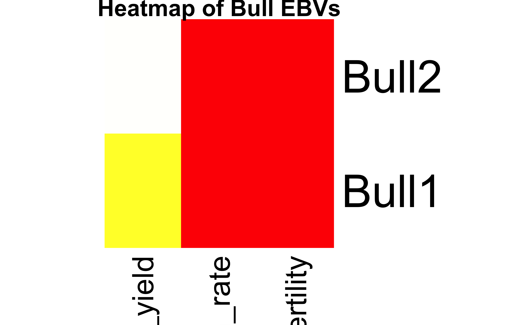
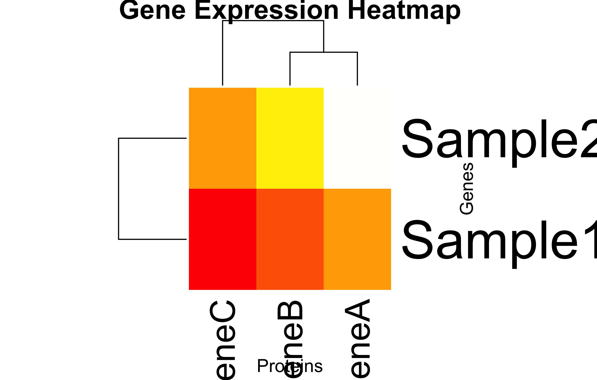
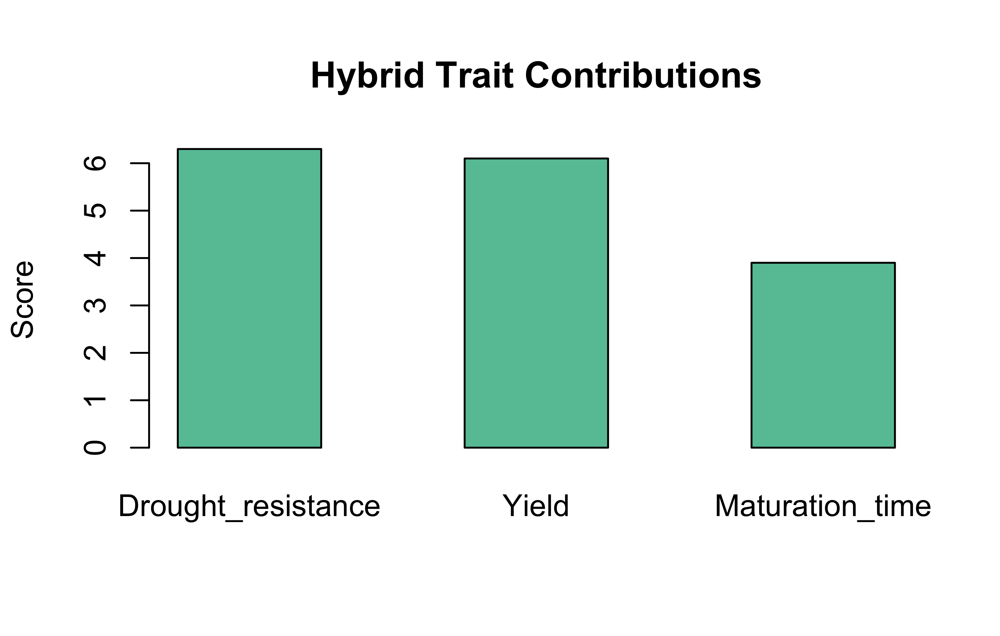
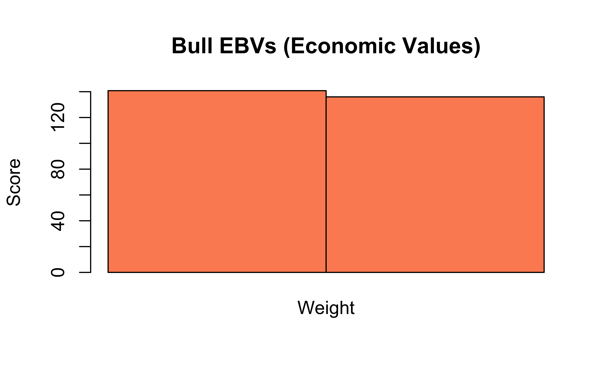
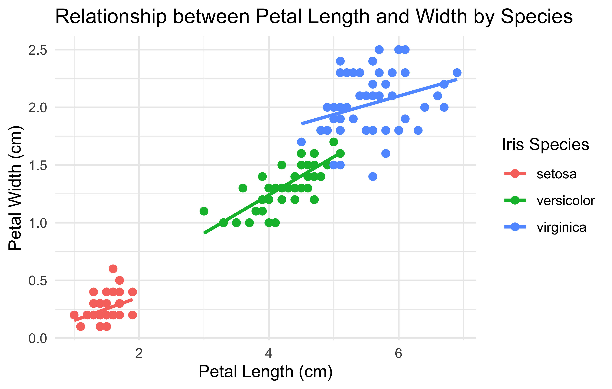

Multiplying the protein levels by the weight vector shows how much each protein contributes in a sample. The result shows total protein concentration per sample.
The result shows that sample S2 has the highest protein burden.
The identity matrix represents no protein interactions or measurement biases. It is a simple matrix calculation.
New calculation:
# changing the weight of ProteinZ to 3.0newweightvector=matrix(c(0.5, 1.0, 3.0), nrow=3, byrow =TRUE)rownames(WeightVector)=c("ProteinX", "ProteinY", "ProteinZ")colnames(WeightVector)=c("Weight")newTotalconc=ProteinMatrix%*%newweightvectorcolnames(newTotalconc)<-"Total_Protein_Conc"newTotalconc
Total_Protein_Conc
Sample1 11.5
Sample2 21.5
Still, S2 has more protein burden.
Bonus:
Heatmap reveals PX is most abundant across all samples.
Matrix multiplication allows each gene in both samples to be multiplied to their respective translation efficiency. So, the product shows how successfully each gene is translated”)
The diagonal TranslationMatrix make sense biologically because they show translation efficiency of each gene and there is no other interaction between them. Although there could be interaction in real-world scenarios.
If Sample2 has higher protein levels even with similar gene expression, it means that more mRNAs are translated to proteins compared to Sample1”
The upward trend in MARplot may indicate an increase in translation efficacy and downward trend may indicate a decline in translation efficacy”
Clustering in the heatmap may suggest which samples are most similar to each other based on their prot.
Task 3: Animal Breeding – Bull Ranking by Economic Traits
Multiplying by identity matrix returns the original matrix. It confirms that EBV structure is preserved.
Remove Milk Yield and Recalculate Total Value
BullEBVs_noMilk<-BullEBVs[, -1]EconomicWeights_noMilk<-EconomicWeights[2:3, , drop =FALSE]TotalValue_noMilk<-BullEBVs_noMilk%*%EconomicWeights_noMilkcolnames(TotalValue_noMilk)<-c("New_Merit")TotalValue_noMilk
New_Merit
Bull1 140
Bull2 135
Interpretation
Bull1: (1.2 × 50) + (0.8 × 100) = 140
Bull2: (1.5 × 50) + (0.6 × 100) = 135
Bull1 still ranks higher, but by a smaller margin.
Bar Plot: Total Economic Value
barplot(TotalValue, beside =TRUE, names.arg =rownames(BullEBVs), col =c("skyblue", "orange"), main ="Total Economic Value of Bulls", ylab ="Total Value")
Heatmap of EBVs
heatmap(BullEBVs, Rowv =NA, Colv =NA, scale ="none", col =heat.colors(256), main ="Heatmap of Bull EBVs")

🧠 Interpretation Questions
How do economic weights affect trait importance?
Traits with higher weights contribute more to the total economic value. This makes them more influential in ranking and selection.
Why might you ignore milk yield?
Milk yield may be excluded in systems focusing on fertility, growth, or when it is no longer a limiting factor. Environmental or economic contexts may also shift trait priorities.
What is the value of heatmaps?
Heatmaps visually compare EBVs across bulls and traits.They help detect patterns, outliers, and clusters easily in multivariate data.
Can this method be extended to more bulls and traits?
Yes. This method scales to any number of bulls or traits. Just ensure the EBVs matrix and economic weights are dimensionally compatible.
Task 4: Plant Breeding – Trait Contributions from Parental Lines
The hybrid is moderately strong in drought resistance and yield, and has a relatively shorter maturation time.
Biological Meaning of Unequal Contribution
When one parent contributes more to a trait, it suggests that the trait’s heritable strength comes disproportionately from that parent. Breeders can use this knowledge to amplify desirable traits using the best parent.
Task 5: Managing Matrices and Weight Vectors Using Lists in R
Now that we’ve explored trait-based decisions using matrices, it’s time to organize our work using R’s list structure. Lists help bundle related objects like matrices and weight vectors, keeping the analysis modular and scalable.
Create a Master List
# Assuming previous matrices and weights are already defined:# Making a MasterListbioList=list( ProteinConc =list(matrix =ProteinMatrix, weights =WeightVector), ProteinMap =list(matrix =GeneExpression, weights =TranslationMatrix), Animal =list(matrix =BullEBVs, weights =EconomicWeights), Plant =list(matrix =ParentTraits, weights =HybridWeights))print(bioList)
# Remove last trait from ParentTraitsParentSubset<-bioList$Plant$matrix[, 1:2]NewWeights<-matrix(c(0.6, 0.4), nrow =2)# Recalculated hybrid scoreSubsetHybridScore<-ParentSubset%*%NewWeightsSubsetHybridScore
[,1]
P1 6.2
P2 6.8
P3 5.4
Interpretation
Dropping a trait and reweighting highlights its influence in trait aggregation and selection.
Visualization Tasks
Heatmap: Gene Expression
heatmap(bioList$ProteinMap$matrix, scale ="none", col =heat.colors(256), main ="Gene Expression Heatmap", xlab ="Proteins", ylab ="Genes")

Bar Plots
Hybrid traits
barplot(bioList$Plant$weights%*%bioList$Plant$matrix, beside =TRUE, main ="Hybrid Trait Contributions", col ="#66c2a5", ylab ="Score")

Bull EBV (Economic Breeding Values)
barplot(bioList$Animal$matrix%*%bioList$Animal$weights, beside =TRUE, main ="Bull EBVs (Economic Values)", col ="#fc8d62", ylab ="Score")

🧠 Interpretation Questions
Why use a list structure?
Keeps each dataset and its weights together. Facilitates automated workflows and reuse.
What’s tricky about [[ ]] access?
You must remember the order ([[1]] = matrix, [[2]] = weights). No names means you can’t use $matrix, only positional access.
Loop across all list entries
Weighted scores for all entries lapply(bioList, function(x) x[[2]] %*% x[[1]])
How does this help in large-scale pipelines?
You can use this format with lapply(), purrr::map(), or in targets pipelines for reproducibility and modular processing.
🧩 Homework solutions: Factors, Subsetting, and Biological Insight
Character vs Factor A character vector simply holds string values, but a factor is a categorical variable with fixed levels, used especially in modeling.
For mutation_status, a factor ensures consistent categories (e.g., "Yes" or "No") and helps control level order and statistical reference groups.
Let’s relevel now, “Housekeeping” is the reference:
# Relevel: make "Housekeeping" the reference levelgene_data$type<-relevel(gene_data$type, ref ="Housekeeping")# Check the new levelslevels(gene_data$type)
[1] "Housekeeping" "Oncogene" "Tumor Suppressor"
But the “Housekeeping” was already a reference by default (using alphabetic ordering by R). Making something else the reference would make more sense. Our code above work, but nothing new is done.
Simulated Expression by Tissue
set.seed(42)gene_expr<-rnorm(45, mean =8, sd =2)tissue<-rep(c("brain", "liver", "kidney"), each =15)tissue_factor<-factor(tissue, levels =c("liver", "brain", "kidney"))boxplot(gene_expr~tissue_factor, col =c("orange", "skyblue", "lightgreen"), main ="Expression by Tissue", ylab ="Expression Level")
# Load necessary packagelibrary(ggplot2)# Use the built-in iris datasetdata(iris)# Create the plotggplot(iris, aes(x =Petal.Length, y =Petal.Width, color =Species))+geom_point(size =2)+# scatter plot pointsgeom_smooth(method ="lm", se =FALSE)+# linear regression lineslabs( title ="Relationship between Petal Length and Width by Species", x ="Petal Length (cm)", y ="Petal Width (cm)", color ="Iris Species")+theme_minimal()# apply a clean minimal theme

library(ggplot2)ggplot(iris, aes(x =Petal.Length, y =Petal.Width))+geom_point(aes(color =Species), size =2)+# color points by Speciesgeom_smooth(method ="lm", se =FALSE, color ="black")+# single regression linelabs( title ="Overall Regression: Petal Length vs Width (Iris Dataset)", x ="Petal Length (cm)", y ="Petal Width (cm)", color ="Iris Species")+theme_minimal()
Md Rasheduzzaman. 2025. “HW Solutions.” September 9, 2025.
💬 Have thoughts or questions? Join the discussion below using your GitHub account!
You can edit or delete your own comments. Reactions like 👍 ❤️ 🚀 are also supported.
Source Code
---title: "HW solutions"abstract: "dataframe, matrices, list, factor, vector, tidyverse, etc."---# L3: Matrices and Lists## Task 1: Protein Quantification in Biological SamplesWe measured the concentration (in µg/µL) of three proteins (P1, P2, P3) in four samples (S1–S4):### 1. Matrices```{r}# Making Protein MatrixProteinMatrix <-matrix(c(5, 3, 2,7, 6, 4),nrow =2, byrow =TRUE)rownames(ProteinMatrix) =c("Sample1", "Sample2")colnames(ProteinMatrix) =c("ProteinX", "ProteinY", "ProteinZ")ProteinMatrix```Now goes the weight matrix```{r}# Making weight matrixWeightVector <-matrix(c(0.5, 1.0, 1.5),nrow=3, byrow =TRUE)rownames(WeightVector) =c("ProteinX", "ProteinY", "ProteinZ")colnames(WeightVector) =c("Weight")WeightVector```Now, multiply them.```{r}# Multiplying MatricesTotalConc = ProteinMatrix %*% WeightVectorcolnames(TotalConc) <-"Total_Protein_Conc"print(TotalConc)```### 2. Making transpose of ProteinMatrix```{r}ProteinMatTranspose =t(ProteinMatrix)ProteinMatTranspose```### 3. Identity Matrix```{r}I <-diag(3)Identitycheck = ProteinMatrix %*% Icolnames(Identitycheck) <-c("ProteinX", "ProteinY", "ProteinZ")Identitycheck```### 4.1. Total Protein per Sample```{r}rowSums(ProteinMatrix)```### 4.2. Total Protein per Protein Type```{r}colSums(ProteinMatrix)```### 4.3. Heatmap of Protein Concentrations```{r}heatmap(ProteinMatrix, scale ="none", col =heat.colors(10))```### 🧠 Interpretation- Multiplying the protein levels by the weight vector shows how much each protein contributes in a sample. The result shows total protein concentration per sample.- The result shows that sample S2 has the highest protein burden.- The identity matrix represents no protein interactions or measurement biases. It is a simple matrix calculation.- New calculation:```{r}# changing the weight of ProteinZ to 3.0newweightvector =matrix(c(0.5, 1.0, 3.0),nrow=3, byrow =TRUE)rownames(WeightVector) =c("ProteinX", "ProteinY", "ProteinZ")colnames(WeightVector) =c("Weight")newTotalconc = ProteinMatrix %*% newweightvectorcolnames(newTotalconc) <-"Total_Protein_Conc"newTotalconc```Still, S2 has more protein burden.Bonus:- Heatmap reveals PX is most abundant across all samples. ## Task 2: Gene-to-Protein Translation```{r}# making Gene Expression matrixGeneExpression <-matrix(c(10, 8, 5,15, 12, 10),nrow =2, byrow =TRUE)rownames(GeneExpression) <-c("Sample1", "Sample2")colnames(GeneExpression) <-c("GeneA", "GeneB", "GeneC")GeneExpression```Translation efficiency:```{r}# making Translation MatrixTranslationMatrix <-matrix(c(1.5, 0 , 0,0, 1.2, 0,0, 0, 1.8),nrow =3, byrow =TRUE)rownames(TranslationMatrix) <-c("GeneA", "GeneB", "GeneC")colnames(TranslationMatrix) <-c("protA", "protB", "protC")TranslationMatrix```### Protein Output```{r}# computing Protein matrixProtein_matrix <- GeneExpression %*% TranslationMatrixcolnames(Protein_matrix) <-c("total_protA", "total_protB", "total_protC")print(Protein_matrix)```### 2. Transpose```{r}# Transpose of GeneExpression matrixGeneExpression_Transpose <-t(GeneExpression)GeneExpression_Transpose```The new matrix represnts a matrix where the rows and columns of GeneExpression matrix have been interchanged.### 3. Identity matrix and multipliccation```{r}# Creating Identity matrixI <-diag(3)I```Now, multiply:```{r}Product_matrix = TranslationMatrix %*% I Product_matrix```The product is identical to TranslationMatrix### 4. Sub-matrix:```{r}# making submatrix AA =matrix(c(10, 8,15, 12), nrow=2, byrow =TRUE)rownames(A) =c("sample1", "sample2")colnames(A) =c("GeneA", "GeneB")A# finding inverse of A#inv_A <- solve(A)#inv_A```The inverse matrix could not be calculated since A is a singular matrix. So, A \* A\^-1 is also not possible.### Visualization tasks:- 1. MARplot```{r}# generating MARplot-style scatter plotplot(GeneExpression, Protein_matrix, type="p", main="Protein level vs. Gene Expression level")labels <-"Sample-Gene"text(GeneExpression, Protein_matrix, labels = labels, pos=3)# generating a heatmapheatmap(Protein_matrix, main="Heatmap of Protein Level", Rowv =TRUE, Colv =TRUE, labRow=rownames(Protein_matrix), labCol=c("ProteinA", "ProteinB", "ProteinC"), col=topo.colors(256) )```- 2. Heatmap of Expression:```{r}heatmap(GeneExpression, col =terrain.colors(10), scale ="column")```### 🧠 Interpretation1. Matrix multiplication allows each gene in both samples to be multiplied to their respective translation efficiency. So, the product shows how successfully each gene is translated")2. The diagonal TranslationMatrix make sense biologically because they show translation efficiency of each gene and there is no other interaction between them. Although there could be interaction in real-world scenarios.3. If Sample2 has higher protein levels even with similar gene expression, it means that more mRNAs are translated to proteins compared to Sample1"4. The upward trend in MARplot may indicate an increase in translation efficacy and downward trend may indicate a decline in translation efficacy"5. Clustering in the heatmap may suggest which samples are most similar to each other based on their prot.## Task 3: Animal Breeding – Bull Ranking by Economic Traits### Define Data```{r}# Define Bull EBVsBullEBVs <-matrix(c(400, 1.2, 0.8,500, 1.5, 0.6), nrow =2, byrow =TRUE)rownames(BullEBVs) <-c("Bull1", "Bull2")colnames(BullEBVs) <-c("Milk_yield", "Growth_rate", "Fertility")BullEBVs# Define Economic WeightsEconomicWeights <-matrix(c(0.002, 50, 100), ncol =1)rownames(EconomicWeights) <-colnames(BullEBVs)colnames(EconomicWeights) <-c("Weight")EconomicWeights```### Compute Total Economic Value```{r}TotalValue <- BullEBVs %*% EconomicWeightscolnames(TotalValue) <-c("Merit")TotalValue```**Interpretation**Bull1: (400 × 0.002) + (1.2 × 50) + (0.8 × 100) = 140.8Bull2: (500 × 0.002) + (1.5 × 50) + (0.6 × 100) = 136.0Bull1 is more valuable economically.**Biological Interpretation**Economic weights convert genetic merit (EBVs, Estimated Breeding Values) into economic merit. Traits with higher financial importance have a larger impact, regardless of absolute EBV values.### Multiply with Identity Matrix```{r}I3 <-diag(3)rownames(I3) <-colnames(BullEBVs)colnames(I3) <-colnames(BullEBVs)I3BullEBVs_identity <- BullEBVs %*% I3BullEBVs_identity```**Interpretation**Multiplying by identity matrix returns the original matrix. It confirms that EBV structure is preserved.### Remove Milk Yield and Recalculate Total Value```{r}BullEBVs_noMilk <- BullEBVs[, -1]EconomicWeights_noMilk <- EconomicWeights[2:3, , drop =FALSE]TotalValue_noMilk <- BullEBVs_noMilk %*% EconomicWeights_noMilkcolnames(TotalValue_noMilk) <-c("New_Merit")TotalValue_noMilk```**Interpretation**Bull1: (1.2 × 50) + (0.8 × 100) = 140Bull2: (1.5 × 50) + (0.6 × 100) = 135Bull1 still ranks higher, but by a smaller margin.### Bar Plot: Total Economic Value```{r}barplot( TotalValue,beside =TRUE,names.arg =rownames(BullEBVs),col =c("skyblue", "orange"),main ="Total Economic Value of Bulls",ylab ="Total Value")```### Heatmap of EBVs```{r}heatmap( BullEBVs,Rowv =NA,Colv =NA,scale ="none",col =heat.colors(256),main ="Heatmap of Bull EBVs")```### 🧠 Interpretation Questions- How do economic weights affect trait importance?Traits with higher weights contribute more to the total economic value. This makes them more influential in ranking and selection.- Why might you ignore milk yield?Milk yield may be excluded in systems focusing on fertility, growth, or when it is no longer a limiting factor. Environmental or economic contexts may also shift trait priorities.- What is the value of heatmaps?Heatmaps visually compare EBVs across bulls and traits.They help detect patterns, outliers, and clusters easily in multivariate data.- Can this method be extended to more bulls and traits?Yes. This method scales to any number of bulls or traits. Just ensure the EBVs matrix and economic weights are dimensionally compatible.## Task 4: Plant Breeding – Trait Contributions from Parental Lines### Define Data**Parent trait values (normalized 1–10)**```{r}ParentTraits <-matrix(c(7, 5, 3,6, 8, 4,5, 6, 6), nrow =3, byrow =TRUE)rownames(ParentTraits) <-c("P1", "P2", "P3")colnames(ParentTraits) <-c("Drought_resistance", "Yield", "Maturation_time")ParentTraits# Define Hybrid WeightsHybridWeights <-matrix(c(0.5, 0.3, 0.2), nrow =1)colnames(HybridWeights) <-colnames(ParentTraits)rownames(HybridWeights) <-c("Weight")HybridWeights```### Compute HybridTraits Vector```{r}HybridTraits <- HybridWeights %*% ParentTraitsrownames(HybridTraits) <-c("Contribution")colnames(HybridTraits) <-rownames(ParentTraits)HybridTraits```**Interpretation**HybridTraits = (0.5 × P1) + (0.3 × P2) + (0.2 × P3)Drought_resistance = (0.5 × 7) + (0.3 × 6) + (0.2 × 5) = 6.3Yield = (0.5 × 5) + (0.3 × 8) + (0.2 × 6) = 6.1Maturation_time = (0.5 × 3) + (0.3 × 4) + (0.2 × 6) = 3.9The hybrid is moderately strong in drought resistance and yield, and has a relatively shorter maturation time.**Biological Meaning of Unequal Contribution**When one parent contributes more to a trait, it suggests that the trait's heritable strength comes disproportionately from that parent. Breeders can use this knowledge to amplify desirable traits using the best parent.### Multiply with Identity Matrix```{r}I3 <-diag(3)ParentTraits_identity <- ParentTraits %*% I3colnames(ParentTraits_identity) <-colnames(ParentTraits)ParentTraits_identity```**Interpretation**Multiplying by identity matrix returns the original matrix. This operation verifies structural consistency and dimensionality.### Remove T3 (Maturation Time) and Recalculate```{r}ParentTraits_T1T2 <- ParentTraits[, 1:2]ParentTraits_T1T2HybridTraits_T1T2 <- HybridWeights %*% ParentTraits_T1T2HybridTraits_T1T2```**Interpretation**Drought_resistance = (0.5 × 7) + (0.3 × 6) + (0.2 × 5) = 6.3Yield = (0.5 × 5) + (0.3 × 8) + (0.2 × 6) = 6.1Removing a trait (T3) changes the trait profile. Hybrid selection may now favor traits that remain.### Heatmap of ParentTraits```{r}heatmap( ParentTraits,Rowv =NA,Colv =NA,scale ="none",col =heat.colors(256),main ="Heatmap of Parent Traits")```### Bar Plot of Hybrid Traits```{r}barplot( HybridTraits,beside =TRUE,names.arg =colnames(ParentTraits),col =c("#66c2a5", "#fc8d62", "#8da0cb"),main ="Hybrid Trait Profile",ylab ="Trait Value")```### 🧠 Interpretation Questions- How does the weighting of parents affect the hybrid's performance? Stronger weights mean more genetic contribution. Traits from highly weighted parents dominate the hybrid profile.- What does the identity matrix represent here? It represents a neutral transformation. It confirms data integrity when used in matrix multiplication.- If you used equal weights (⅓ for each), how would the hybrid traits change? Traits would reflect an even mix, potentially leading to balanced but less specialized performance.- What real-world limitations does this simplified model ignore? i. Non-additive genetic effects (dominance, epistasis) ii. Environmental interactions iii. Trait heritability and correlations iv. Breeding feasibility and cost## Task 5: Managing Matrices and Weight Vectors Using Lists in RNow that we've explored trait-based decisions using matrices, it's time to organize our work using R's list structure. Lists help bundle related objects like matrices and weight vectors, keeping the analysis modular and scalable.### Create a Master List```{r}# Assuming previous matrices and weights are already defined:# Making a MasterListbioList =list(ProteinConc =list(matrix = ProteinMatrix, weights = WeightVector),ProteinMap =list(matrix = GeneExpression, weights = TranslationMatrix),Animal =list(matrix = BullEBVs, weights = EconomicWeights),Plant =list(matrix = ParentTraits, weights = HybridWeights))print(bioList)```### List the Structure```{r}names(bioList) # Top-level list nameslengths(bioList) # Number of components in each sublist```**Interpretation**Each top-level entry (e.g., ProteinConc, Plant) contains two components:- A matrix (e.g., ProteinMatrix)- A corresponding weight vector or matrix### Indexing Elements from Lists```{r}# Access the trait matrix for PlantbioList$Plant[[1]]#orbioList$Plant$matrix# Access the weight vector for ProteinConcbioList$ProteinConc[[2]]#orbioList$ProteinConc$weights```**Interpretation**Use double brackets `[[ ]]` to extract unnamed list elements by position. But we named our list, so they are easily extractable using the `$` notation.### Perform Weighted Calculations```{r}# Protein concentration scorebioList$ProteinConc$matrix %*% bioList$ProteinConc$weights# Gene → Protein contributionbioList$ProteinMap$matrix %*% bioList$ProteinMap$weights# Bull economic valuebioList$Animal$matrix %*% bioList$Animal$weights# Hybrid trait valuebioList$Plant$weights %*% bioList$Plant$matrix```### Subset and Recalculate```{r}# Remove last trait from ParentTraitsParentSubset <- bioList$Plant$matrix[, 1:2]NewWeights <-matrix(c(0.6, 0.4), nrow =2)# Recalculated hybrid scoreSubsetHybridScore <- ParentSubset %*% NewWeightsSubsetHybridScore```**Interpretation**Dropping a trait and reweighting highlights its influence in trait aggregation and selection.### Visualization Tasks#### Heatmap: Gene Expression```{r}heatmap( bioList$ProteinMap$matrix,scale ="none",col =heat.colors(256),main ="Gene Expression Heatmap",xlab ="Proteins",ylab ="Genes")```#### Bar Plots##### Hybrid traits```{r}barplot( bioList$Plant$weights %*% bioList$Plant$matrix,beside =TRUE,main ="Hybrid Trait Contributions",col ="#66c2a5",ylab ="Score")```##### Bull EBV (Economic Breeding Values)```{r}barplot( bioList$Animal$matrix %*% bioList$Animal$weights,beside =TRUE,main ="Bull EBVs (Economic Values)",col ="#fc8d62",ylab ="Score")```### 🧠 Interpretation Questions- Why use a list structure?Keeps each dataset and its weights together. Facilitates automated workflows and reuse.- What’s tricky about `[[ ]]` access?You must remember the order (`[[1]]` = `matrix`, `[[2]]` = `weights`). No names means you can't use `$matrix`, only positional access.Loop across all list entriesWeighted scores for all entries `lapply(bioList, function(x) x[[2]] %*% x[[1]])`- How does this help in large-scale pipelines?You can use this format with `lapply()`, `purrr::map()`, or in targets pipelines for reproducibility and modular processing.## 🧩 Homework solutions: Factors, Subsetting, and Biological Insight1. **Character vs Factor** A character vector simply holds string values, but a factor is a categorical variable with fixed levels, used especially in modeling. For `mutation_status`, a factor ensures consistent categories (e.g., `"Yes"` or `"No"`) and helps control level order and statistical reference groups. 2. **Factor Levels**```{r}species <-c("Lactobacillus", "Bacteroides", "Escherichia", "Bacteroides", "Lactobacillus")species_factor <-factor(species, levels =c("Bacteroides", "Escherichia", "Lactobacillus"))levels(species_factor)```Because we defined the level order explicitly, R maintains that order regardless of data input.3. Ordered Factor Comparison```{r}disease_severity <-factor(c("Mild", "Severe", "Moderate"), levels =c("Mild", "Moderate", "Severe", "Critical"), ordered =TRUE)disease_severity[1] < disease_severity[2]# TRUE```"Mild" is less severe than "Severe" based on the defined order.4. Proportion Extraction```{r}prop <-prop.table(table(species_factor))prop["Escherichia"]````prop$Escherichia` won't work — named numeric vectors require bracket-based access.5. Subsetting by Conditions```{r}gene_df <-data.frame(gene_id =c("BRCA1", "TP53", "MYC", "EGFR", "GAPDH"),expression =c(8.2, 6.1, 9.5, 7.0, 10.0),mutation =factor(c("Yes", "No", "Yes", "No", "No")),pathway =c("DNA Repair", "Apoptosis", "Cell Cycle", "Signaling", "Metabolism"))rownames(gene_df) <- gene_df$gene_id #name the rows by the gene IDsgene_df <- gene_df[, -1] #remove the first column which is not needed anymore#gene_dfgene_df[gene_df$expression >7& gene_df$mutation =="No", ]```Returns genes with **high expression (\>7)** `and` **no mutation** — potentially highly active but wild-type genes.6. Group-wise Expression SummaryThe given vectors are:```{r}samples <-c("WT", "KO", "WT", "KO", "WT")expression <-c(5.2, 8.1, 4.3, 9.0, 5.7)```The solution would be:```{r}group_factor <-factor(samples)# Mean expressiontapply(expression, group_factor, mean) ## KO: 8.55, WT: 5.07# Plotbarplot(tapply(expression, group_factor, mean), col =c("skyblue", "salmon"),ylab ="Mean Expression",main ="Group-wise Expression")```7. Gene Subsetting```{r gene_df_subset}gene_df[gene_df$expression >8& gene_df$pathway %in%c("Cell Cycle", "Signaling"), ]```It filters for genes highly expressed and involved in key biological pathways.8. Disease Stage Visualization```{r}stages <-c("Stage I", "Stage III", "Stage II", "Stage IV", "Stage I")disease_stage <-factor(stages, levels =c("Stage I", "Stage II", "Stage III", "Stage IV"), ordered =TRUE)barplot(table(disease_stage), col ="lightgreen", main ="Patient Count by Disease Stage",ylab ="Count")```Let's do the severity order check:```{r}# Comparisondisease_stage[2] > disease_stage[1] # TRUE```So, "Stage III" is more sever than "Stage I".9. Oncogene Subsetting and Releveling```{r}# Define a small gene datasetgene_data <-data.frame(gene =c("TP53", "BRCA1", "MYC", "GAPDH", "EGFR"),expression =c(9.1, 7.3, 10.5, 5.2, 8.6),type =factor(c("Tumor Suppressor", "Oncogene", "Oncogene", "Housekeeping", "Oncogene")))# Subset: Oncogene rows with expression > 8gene_data[gene_data$type =="Oncogene"& gene_data$expression >8, ]```Let's relevel now, "Housekeeping" is the reference:```{r}# Relevel: make "Housekeeping" the reference levelgene_data$type <-relevel(gene_data$type, ref ="Housekeeping")# Check the new levelslevels(gene_data$type)```But the "Housekeeping" was already a reference by default (using alphabetic ordering by R). Making something else the reference would make more sense. Our code above work, but nothing new is done.10. Simulated Expression by Tissue```{r}set.seed(42)gene_expr <-rnorm(45, mean =8, sd =2)tissue <-rep(c("brain", "liver", "kidney"), each =15)tissue_factor <-factor(tissue, levels =c("liver", "brain", "kidney"))boxplot(gene_expr ~ tissue_factor, col =c("orange", "skyblue", "lightgreen"), main ="Expression by Tissue",ylab ="Expression Level")```Let's calculate variability per tissue type now:```{r}# Variabilitytapply(gene_expr, tissue_factor, sd)# Returns standard deviation per tissue group```## 🧩 Homework Solution tidyverse```{r}# Load necessary packagelibrary(ggplot2)# Use the built-in iris datasetdata(iris)# Create the plotggplot(iris, aes(x = Petal.Length, y = Petal.Width, color = Species)) +geom_point(size =2) +# scatter plot pointsgeom_smooth(method ="lm", se =FALSE) +# linear regression lineslabs(title ="Relationship between Petal Length and Width by Species",x ="Petal Length (cm)",y ="Petal Width (cm)",color ="Iris Species" ) +theme_minimal() # apply a clean minimal theme``````{r}library(ggplot2)ggplot(iris, aes(x = Petal.Length, y = Petal.Width)) +geom_point(aes(color = Species), size =2) +# color points by Speciesgeom_smooth(method ="lm", se =FALSE, color ="black") +# single regression linelabs(title ="Overall Regression: Petal Length vs Width (Iris Dataset)",x ="Petal Length (cm)",y ="Petal Width (cm)",color ="Iris Species" ) +theme_minimal()```